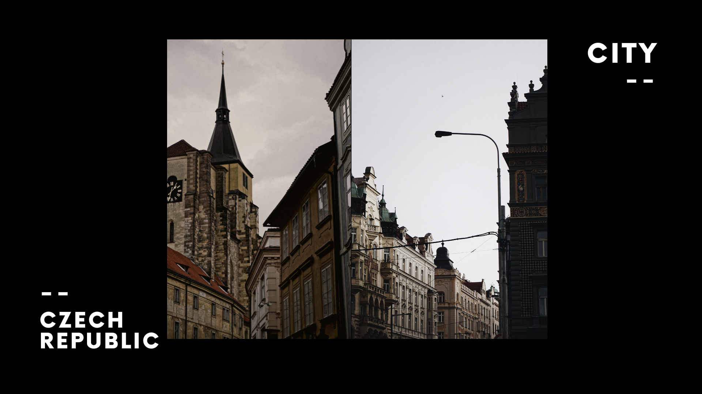
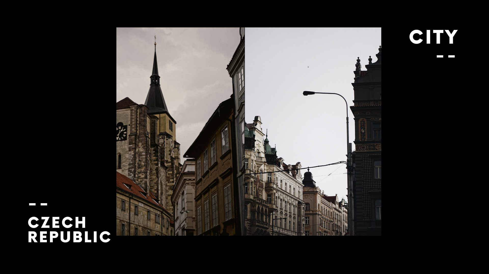

My Music
Somehow, I sound like a good singer (with pitch correction :D), but I just really love to sing these couple of years. I accidentally made some music using all the audio peripherals that I have which I surely keep with all my soul.
Even though I sound shit, my friend said I am an Eminem younger brother when I do rap songs, and I sound like Billie Eilish's brother when I sing ballad songs.
 
